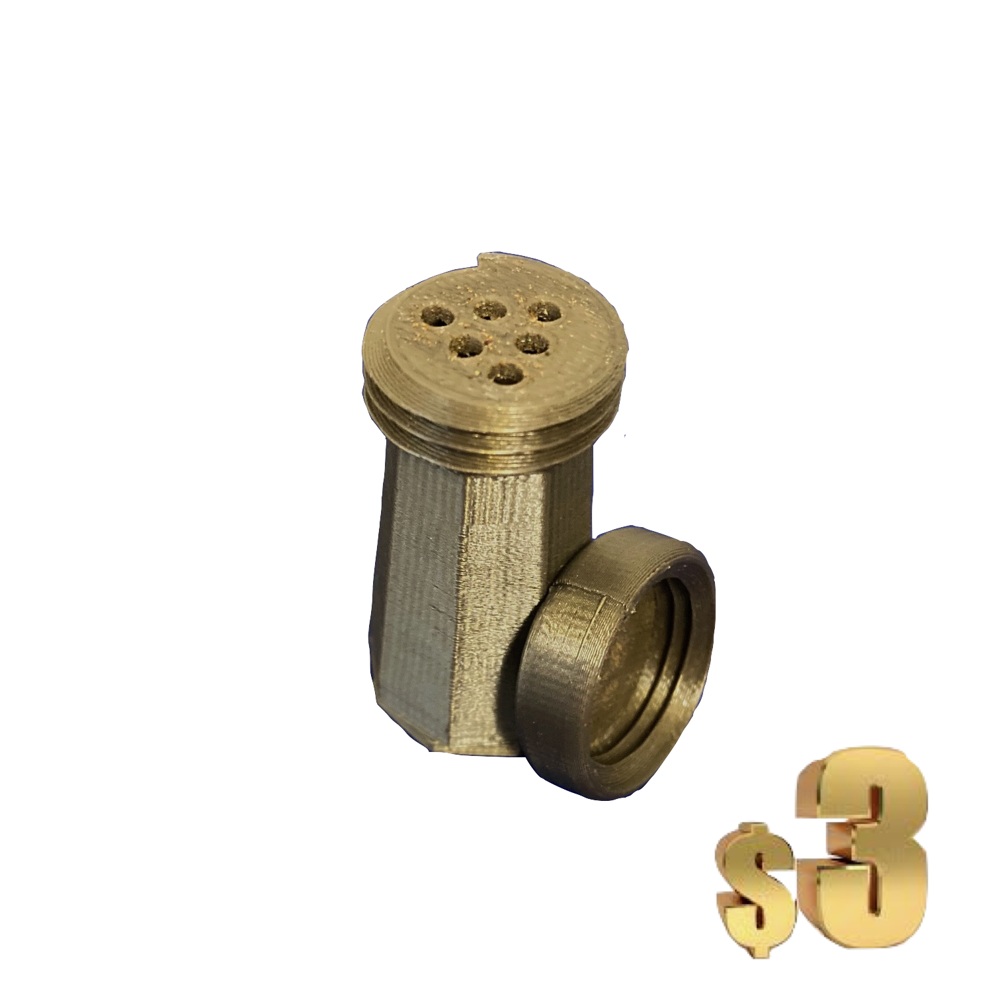
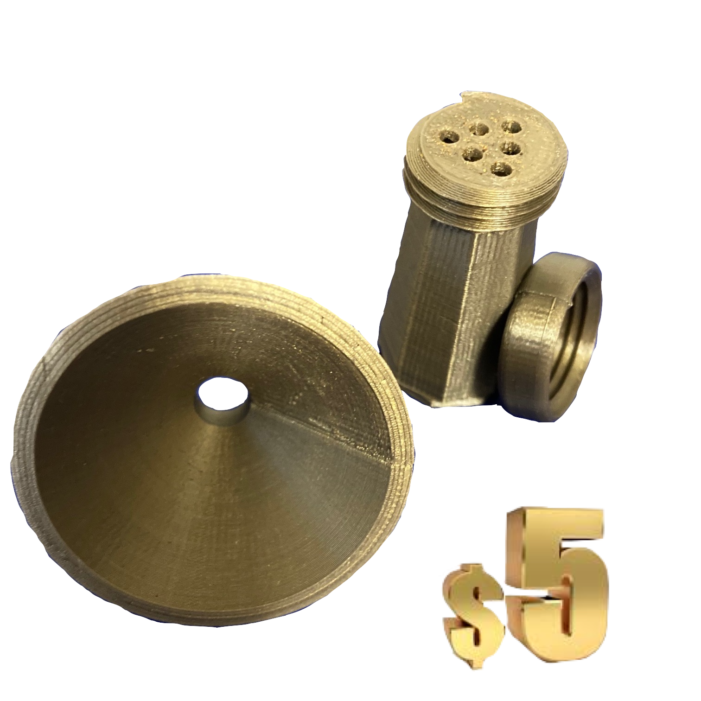

Portable Mini Salt Shakers
Standard
Premium
A must have improvement to school lunches!
A small, pocket sized salt shaker. This salt shaker uses a double cap system to allow for easy transportation without spills and easy refilling through the removable bottom cap.
The premium salt shaker is similar to the standard, but it includes a funnel for easier refilling and uses more precise manufacturing techniques. All this is included for only 2 dollars more.
Purchasing Info
You can purchase these salt shakers in one of two ways. You can either preorder by emailing me at bkirby5944@k12bcs.org, or you can visit me near the Think Tanks upstairs on Fridays. Preordering will ensure that I will have a salt shaker for you the next day, as manufacturing takes around two hours. I will try to always have one on Fridays so if you come early during lunch there will be no wait time. I will accept CASH ONLY!
About
This buisness is run by Benjamin Kirby. These are personally guaranteed to be quality and clean mini salt shakers, as well as being made from plant based plastic if you're into that sort of thing. Each salt shaker is designed, 3D printed and assembled by me to provide an easy way to salt the bland school fries. You can even use whatever salt flavors you want, and I have designed the shaker to have large enough holes to not clog with various different salts.

